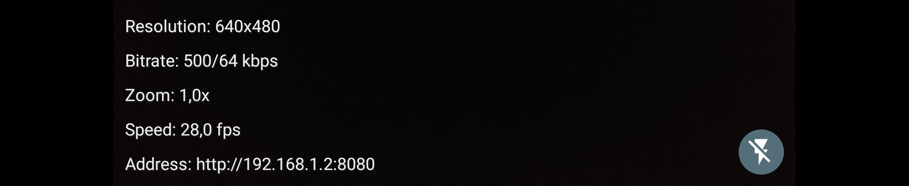
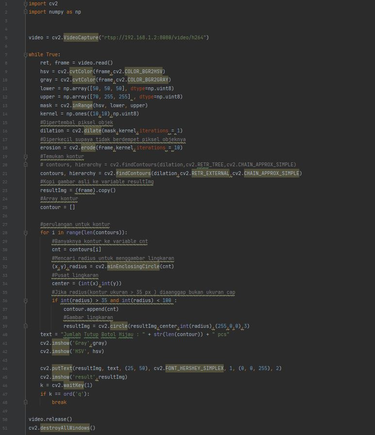
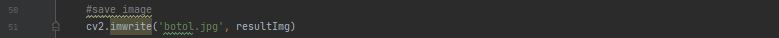
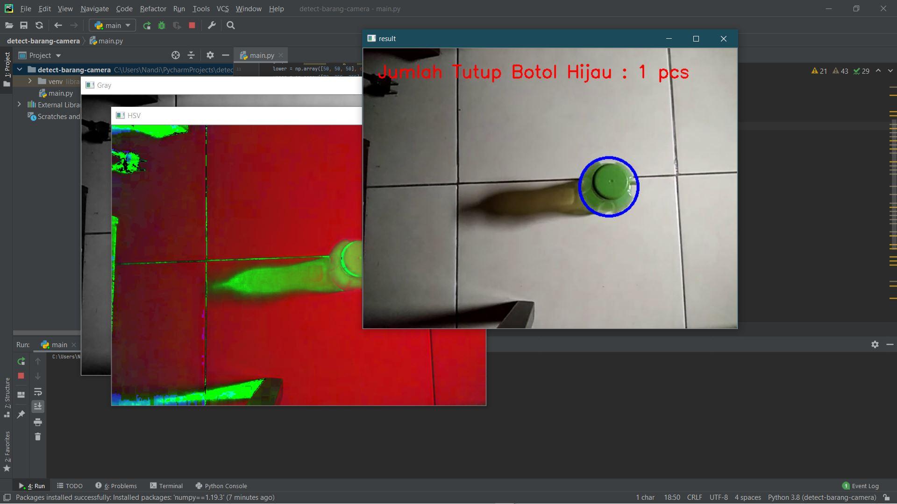

Pertama-tama yang perlu kalian siapkan untuk mendeteksi barang menggunakan kamera pada opencv ini adalah menginstall aplikasi CamON Live Stream pada handphone kalian masing-masing. Setelah itu mari kita masuk ke langkah-langkahnya.
1. Buka aplikasi CamON Live Stream tadi lalu copy link address nya
2. Lalu ganti link address pada variable video dengan link address kalian, dan saya menggunakan code seperti ini :
3. Dan jika ingin gambar otomatis tersimpan, jangan lupa tambahkan code seperti ini :
4. Lalu ketika kita run hasilnya seperti ini :
